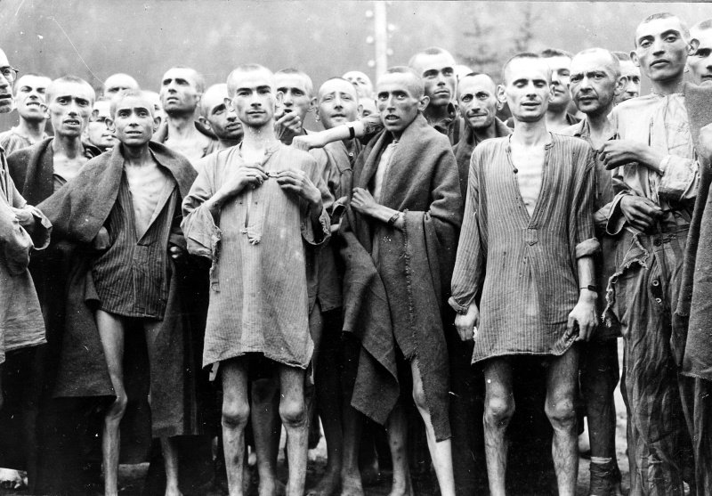

America's government needs to pay attention to the reports and aid the Jews in their escape from Hitler and the Nazi's.
Updated 2 days ago at 11:59 PST
We can no longer look away in ignorance of the atrocities committed in Auschwitz at this very moment! Right now, as rumors circulate, innocent Jews are being killed in mass, locked away for crimes they didn't commit, all thanks to the brutal Nazi regime.
Whether the reports are fully accurate or not, we cannot know for sure, but we also cannot condemn an entire race to death by not interfering. I believe that the reports circulating from Poland are to be taken seriously by our citizens and by the American Government.
Our time for isolationism has to come to an end, as we are needed to stop Hitler in his conquest across Europe.